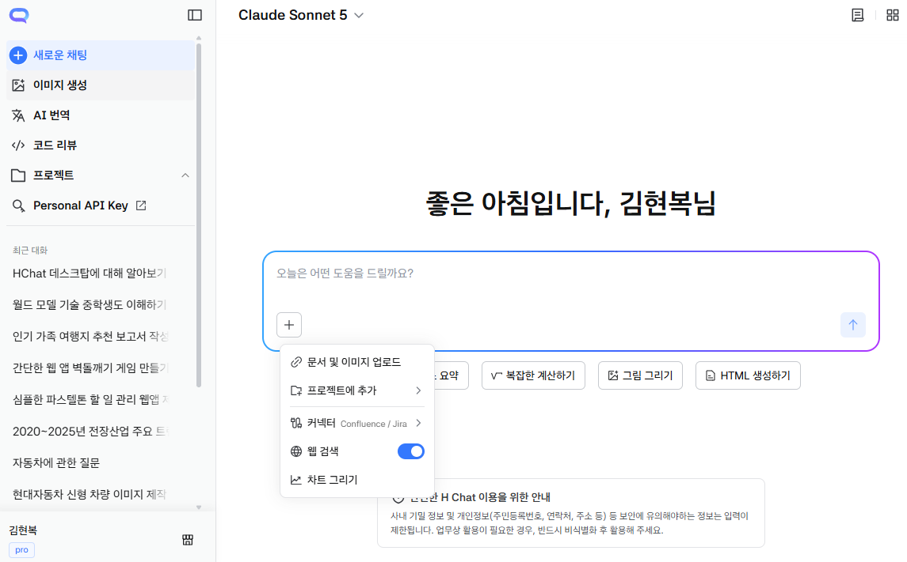
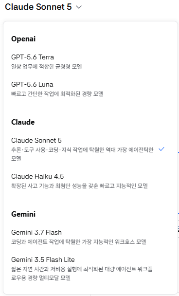
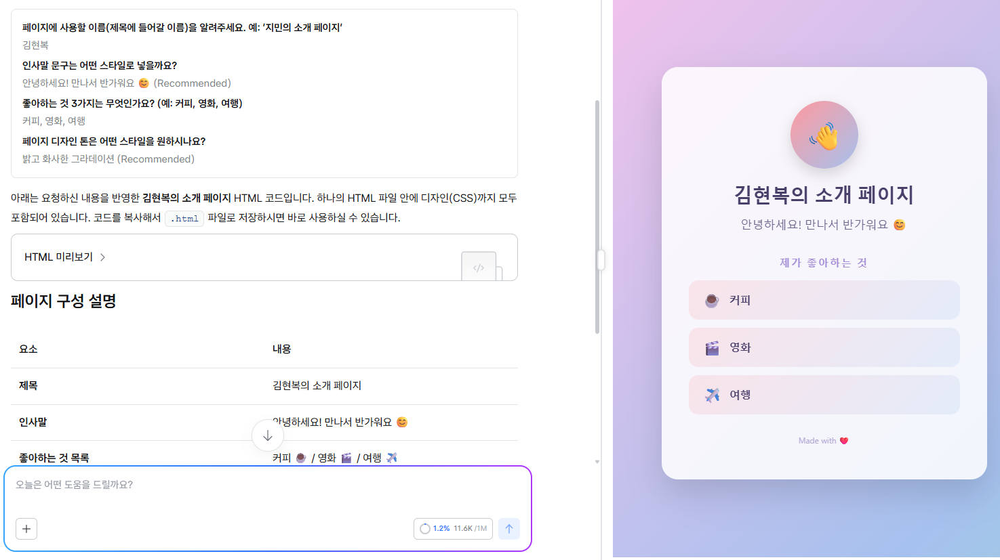
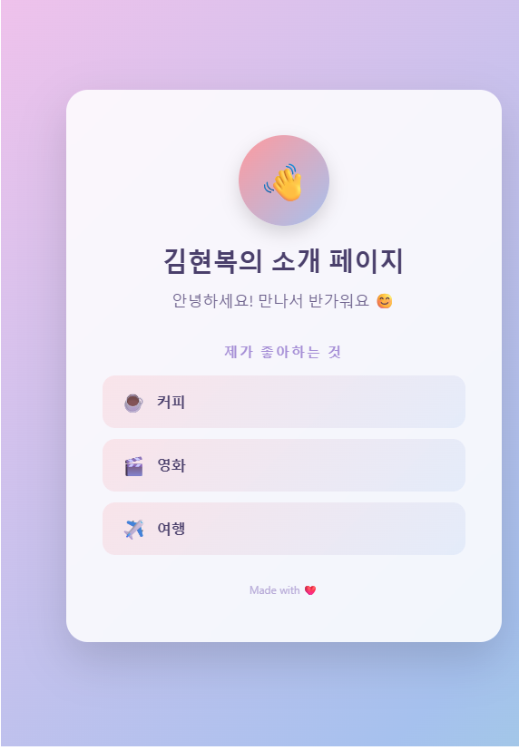
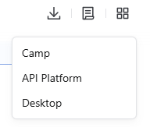
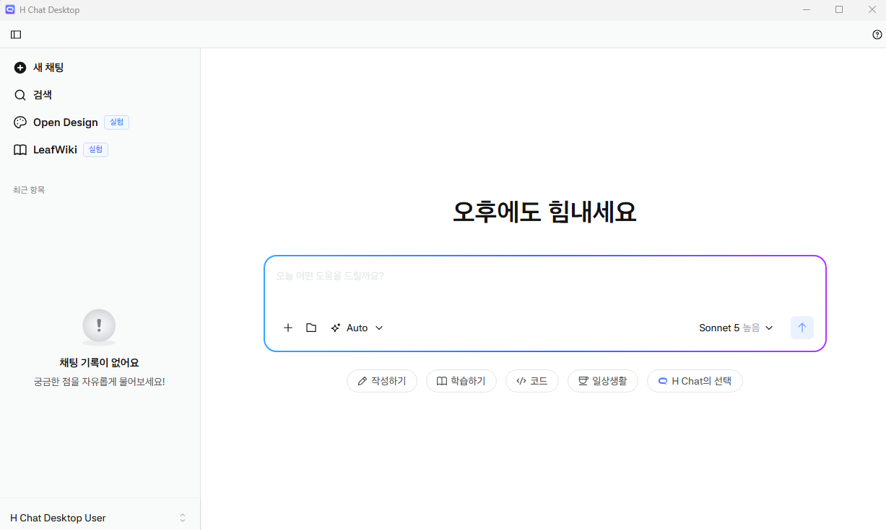

Module 1.
H-Chat으로 시작하는
AI 업무 활용
이 시간에 할 일
M1
대화형 AI의 기본 원리와 H-Chat 핵심 기능을 이해하고,
말로 부탁해 웹페이지 한 장을 직접 만들어 봅니다.
| 구분 | 내용 |
|---|---|
| 개념 | AI 활용의 변화 — 대화형 AI에서 Agent까지 |
| 개념+실습 | H-Chat 모델·기능 한눈에 이해 · 모델이란 무엇인가 |
| 개념+실습 | 말로 만드는 웹페이지 · 첫 페이지 만들고 · 말로 고쳐보기 |
| 실습 | 나만의 웹페이지 만들기 · 결과물을 교육 플랫폼에 올리기 |
| 공유 | 서로의 결과물 보기 — 어떤 문장으로 만들었는지 나누기 |
AI 활용의 변화
M1-1 · 개념AI를 ‘질문하면 답하는 챗봇’ 정도로만 쓰면, 이후에 배울 자동화가 왜 필요한지 와닿지 않습니다.
STEP 1
대화형 AI
물어보면 답한다.
매번 새로 설명해야 한다.
STEP 2 — 오늘 M1
반복업무 구조화
자주 하는 일의 기준·자료를
미리 넣어두고 재사용한다.
STEP 3 — M2 이후
Agent 활용
여러 파일을 읽고 처리하며
업무를 대신 수행한다.
H-Chat 모델·기능 한눈에 이해
M1-2 · 개념오늘 쓸 기능은 세 가지입니다. 화면에서 위치부터 찾아봅시다.

1 2 3모델
업무에 따라 선택하는 엔진
화면 위쪽 모델 이름을 눌러 바꾼다
프로젝트
반복업무 전용 작업공간
왼쪽 메뉴 · 기준과 자료를 미리 넣어둔다
커넥터
업무자료와 연결하는 통로
입력창 [+] > 커넥터 · Confluence / Jira
모델이란?
M1-2 · 개념모델은 내 말을 알아듣고 대신 글을 써주는 ‘AI의 머리’입니다.
STEP 1
내가 말한다
‘월간 실적 보고서 써줘’처럼 평소 말투로 부탁합니다.
STEP 2
모델이 생각한다
수없이 많은 글을 미리 읽어둔 AI가 다음 말을 이어 붙입니다.
STEP 3
답이 나온다
몇 초 만에 보고서 초안 한 편이 만들어집니다.
왜 모델이 여러 개일까요?
회사마다 따로 만들어, 잘하는 일이 다릅니다.
그래서 H-Chat 안에 여러 모델이 함께 들어 있다
그럼 우리는 뭐를 하나요?
만들 필요 없이 일에 맞는 것으로 골라 쓰기만 하면 됩니다.
대화창은 그대로, 화면 위쪽 모델 이름만 바꾸면 끝
모델 — 세 회사는 무엇이 다른가
M1-2 · 개념H-Chat Pro에는 OpenAI · Claude · Gemini 세 회사의 모델이 들어 있습니다. 회사마다 잘하는 일이 다릅니다.
OpenAI
두루 무난한 만능형
문서 · 요약 · 번역
품질과 속도의 균형
특정 영역의 1등은 아님
Claude
깊게 파고드는 분석가
추론 · 긴 문서 이해
코딩 · 도구 사용
비용이 가장 높음
Gemini
빠르고 저렴한 실무형
이미지 생성 · 이해
저비용 · 빠른 속도
복잡한 추론은 아쉬움
같은 회사 안에서도 둘로 나뉜다
M1-2 · 개념이름은 어렵지만 구조는 간단합니다. 회사마다 ‘알바생 두 명’이 있다고 생각하세요.

똑똑하지만 비싼 알바생
시간이 좀 걸려도 깊이 생각하고 꼼꼼하게 해냅니다.
보고서 초안 · 복잡한 판단 · 중요한 문서
덜 똑똑해도 빠르고 싼 알바생
깊이는 덜해도 즉시, 많이 처리해 줍니다.
단순 요약 · 형식 정리 · 반복·대량 작업
| 회사 | 똑똑한 쪽 | 빠른 쪽 |
|---|---|---|
| OpenAI | GPT-5.6 Terra | GPT-5.6 Luna |
| Claude | Claude Sonnet 5 | Claude Haiku 4.5 |
| Gemini | Gemini 3.7 Flash | Gemini 3.5 Flash Lite |
이번에는 눈에 보이는 결과물을 만듭니다
M1-3 · 개념지금까지 AI는 글을 써 줬습니다. 이번에는 웹페이지 한 장을 직접 만들어 봅니다.
웹페이지란?
인터넷에서 보는 한 장의 화면입니다.
사내 공지 · 뉴스 · 쇼핑몰 화면 모두 웹페이지
HTML이란?
그 화면을 어떻게 그릴지 적어둔 설계도 한 장입니다.
브라우저가 설계도를 읽어 화면으로 그려준다
내가 할 일은?
설계도는 AI가 씁니다. 나는 말로 부탁만 합니다.
코딩 지식 · 프로그램 설치 필요 없음
부탁하고 → 미리보기로 확인하면 끝
M1-3 · 개념오늘 실습의 순서는 네 단계뿐입니다.
STEP 1
말로 부탁한다
H-Chat에 “이런 페이지 만들어줘”라고 씁니다.
STEP 2
코드를 받는다
AI가 설계도(HTML)를 통째로 써 줍니다.
STEP 3
미리보기를 누른다
결과 아래 [HTML 미리보기]를 클릭합니다.
STEP 4
말로 고친다
“이렇게 바꿔줘” 한 문장이면 다시 그려집니다.
[실습] 첫 웹페이지 만들기
M1-3 · 실습- H-Chat 새 대화 열기 — 모델은 ‘똑똑한 쪽’으로
- 아래 문장을 그대로 붙여넣고 실행
- 결과가 나오면 다음 장에서 화면으로 확인
그대로 붙여넣는 문장
나를 소개하는 웹페이지를 HTML 파일 하나로 만들어줘.
제목은 ‘OOO의 소개 페이지’, 인사말 한 줄, 내가 좋아하는 것 3가지 목록을 넣어줘.
디자인도 같은 파일 안에 넣고, 코드 전체를 한 번에 보여줘.
왜 하는가
코딩을 배우지 않고도 말 한 문장으로 결과물이 만들어진다는 것을 직접 확인합니다.
준비물
H-Chat Pro 새 대화 1개
이름 자리(OOO)에는 본인 이름을 넣습니다
무엇이 남는가
내 손으로 만든 웹페이지 화면 1개
결과 확인 — [HTML 미리보기]
M1-3 · 실습결과 아래 [HTML 미리보기]를 누르면 오른쪽에 화면이 바로 뜹니다.

1 2마음에 안 들면 — 말로 고칩니다
M1-3 · 시연코드를 건드리지 않습니다. “이렇게 바꿔줘” 한 문장이면 화면이 다시 그려집니다.

① 처음 결과
고칠 때 쓴 문장
인사하기 버튼을 누르면 폭죽이 터지게 해줘.

② 고친 결과
이렇게 말하면 고쳐집니다
M1-3 · 시연외울 필요 없습니다. 평소 말투 그대로 부탁하면 됩니다.
색 · 분위기
“배경을 하늘색으로 바꿔줘”
밝게 · 차분하게 같은 말도 알아듣는다
배치 · 크기
“제목을 가운데로, 더 크게 해줘”
답답하다 · 여백이 좁다도 그대로 전달
내용 추가
“맨 아래 버튼을 넣고, 누르면 인사말이 뜨게 해줘”
표 · 사진 자리 · 목록도 같은 방식
기기 대응
“휴대폰에서도 잘 보이게 해줘”
화면 크기에 맞춰 알아서 정리해 준다
[실습] 나만의 웹페이지 만들기
M1-4 · 실습- 무엇을 만들지 정한다 다음 장의 예시에서 골라도 됩니다
- H-Chat에 한 문장으로 부탁한다
- [HTML 미리보기]로 결과를 확인한다
- 마음에 들 때까지 말로 고친다
왜 하는가
처음부터 끝까지 자연어만으로 결과물 하나를 완성해 봅니다.
규칙
정답 없음 · 잘 만들 필요 없음
업무와 관련 없어도 괜찮습니다
막히면
손 들어 조교 호출 — 완료본 예제 파일을 받아 이어서 진행합니다.
무엇을 만들까 — 예시
M1-4 · 실습떠오르지 않으면 아래에서 하나 골라 그대로 부탁해도 됩니다.
나를 소개하는 한 장
이름 · 하는 일 · 좋아하는 것
가장 빠르게 완성된다
우리 팀 안내 페이지
팀 소개 · 담당 업무 · 연락 방법
실제 업무에 바로 응용 가능
오늘 배운 것 정리
모델 · 부탁하는 문장 · 만드는 순서
복습 카드로 남는다
D-day · 목록 페이지
여행지 · 맛집 · 남은 날짜 세기
움직이는 화면까지 만들어 준다
[실습] 만든 페이지를 플랫폼에 올리기
M1-4 · 실습- 완성된 코드를 복사해 이름.html 로 저장 메모장 > 다른 이름으로 저장 · 파일 형식 모든 파일 · 인코딩 UTF-8
- hyundai.mincoding.co.kr 강의장 접속
- 상단 [질문있어요] 메뉴 클릭
- 공지글 ‘나만의 창작물을 올려주세요’ 열기
- 댓글 작성창의 파일 업로드로 내 파일을 첨부하고 한 줄 소개를 쓴 뒤 [입력]

③④ 질문있어요 > 공지글 열기

⑤ 댓글 작성창 > 파일 업로드
서로 보고 · 한 줄 남기기
M1-5 · 공유올라온 결과물을 함께 봅니다. 잘 만든 사람이 아니라, 어떻게 부탁했는지를 봅니다.
- 제출 목록에서 다른 사람 작품 3개 열어보기
- 마음에 드는 것 1개를 고르고 어디가 좋았는지 한 줄 남기기
- 몇 명은 화면을 공유하고, 어떤 문장으로 부탁했는지 그대로 읽어보기
M1 정리
M1 · 정리기능 이름이 아니라 ‘업무에서 언제 쓰는지’로 기억하세요.
H-Chat 데스크탑 내려받기
M2 준비쉬는 시간에 미리 받아두세요. H-Chat Pro 오른쪽 위 다운로드 아이콘 > Desktop 입니다.

① 오른쪽 위 ⤓ > Desktop

② 설치하고 실행한 첫 화면
감사합니다.
이어서 M2. H-Chat 더 깊이 쓰기